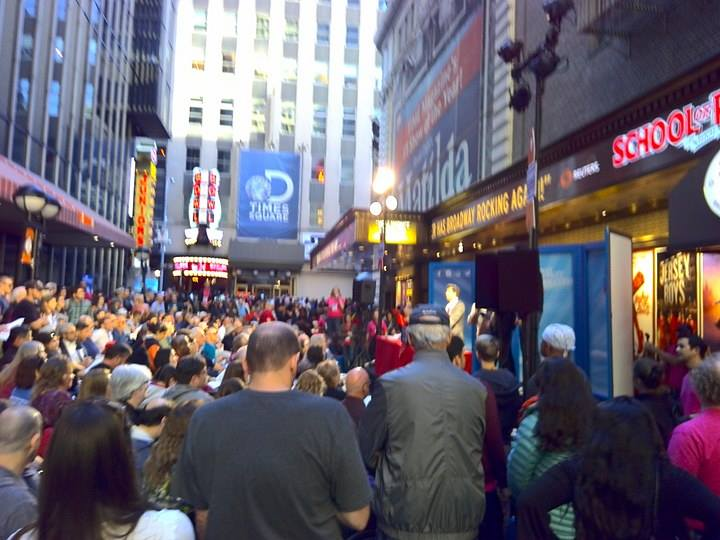

A generous day at the alley
Broadway raises $782,081 for charity
(2016. oct 11.)
It is already the evening, but the Shubert Alley is still full of theater-lovers and bidders and the flea market tables outside the alley still attract many visitors. “This is going to be a hot-hot-hot ticket” yells auctioneer Bryan Batt, while behind him his colleague holds up a three feet wide picture of Sally Field, who plays Amanda Wingfield in an upcoming production of Tennessee Williams’ “The Glass Menagerie”. The ferocious bidding begins and does not slow down, not even well above $3000. Turns out this ticket is indeed hot.
On the 25th of September the 30th Annual Broadway Flea Market and Grand Auction took place at Shubert Alley, where theatermakers as well as theater lovers gathered to raise money for Broadway Cares/Equity Fights AIDS. The whole-day event attracted thousands of people and featured auctions of exclusives tickets, backstage tours and cameo roles, also a wide range of theater memorabilia was sold at the flea market set up near the auction stage. By the end of the day, the sales raised $782,081, a record amount in the history of the event.
“We are almost sold out. We managed to sell a whole tower of posters” John Goodwin, 68, an employee of Reel Time Video Production says. His company raised $11,602, which ranks number seven among all tables. Mr Goodwyn lifts his hand up from the table to the line of his eyes. “This is how many posters we started out with in the morning.”
“This is my first year working here” Haley Gendell, 18, says “There are a lot of people here who are really passionate about theater.” Haley is in charge of a table that sells pins and theater-themed books and that had also almost sold out.
The silent auction raised $80,080 throughout a day and the Autograph Table and Photo Booth, where fans could meet and take pictures with their favorite Broadway stars raised $22,511. Broadway stars appearing at the table included Christy Altomare, Michael Arden, James Barbour, Bryan Batt and Richard H. Blake.
 Go Back
Go Back